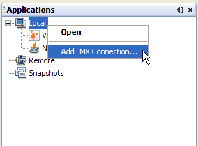
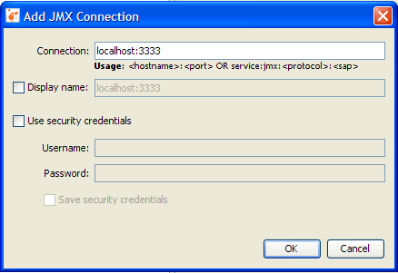
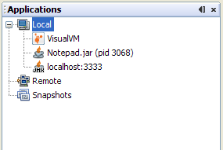
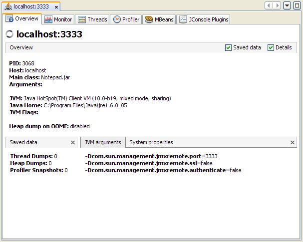
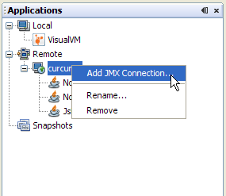
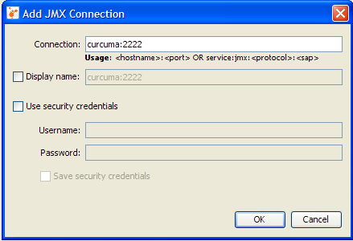
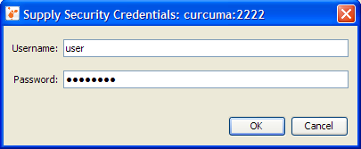
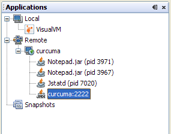
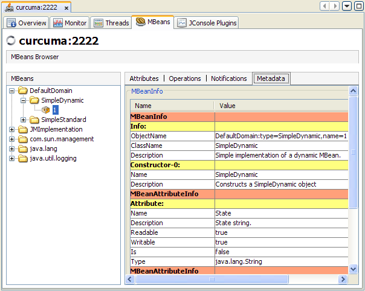

JMX에이전트에 명시적으로 연결
자바 관리용 확장패키지 기능인 JMX는 로컬및 원격 자바가상머신(JVM)에서 실행중인 자바 기반의 애플리케이션을 모니터링하고 관리하기 위해 사용할 수 있다. 자바 애플리케이션은 JDK6.0이상의 버전에서 실행중이라면 JMX에이전트를 사용해서 자동으로 모니터링하고 관리할 수 있다. JDK1.5를 포함한 그 이하 버전에서 실행중이라면, 애플리케이션을 실행할때 시스템 프로퍼티로 com.sun.management.jmxremote.*를 셋팅해서 수동으로 모니터링하고 관리할 수 있다. 시스템 프로퍼티를 셋팅하는 방법을 사용하거나 JDK 6.0이상을 사용하는 것으로 플랫폼의 뛰어난 모니터링및 관리기능을 사용할 수 있다. JVM소프트웨어에서 MBean서버를 자동으로 사용하거나 JMX클라이언트가 관리하도록 MBean을 등록하는 것도 가능하다. VisualVM은 이러한 JMX클라이언트 애플리케이션 중 하나이다.
알림: JMX기술과 MBean 그리고 MBean서버등에 대한 간단한 소개를 했고, VisualVM을 사용해서 MBean을 모니터링하고 관리하는 방법은 VisualVM MBeans 탭 페이지를 보라. Java SE의 특별한 모니터링및 관리 기능에 대한 소개는 Java SE 모니터링및 관리 가이드의 JMX기술을 사용하여 모니터링하고 관리페이지를 보면 된다.
JMX 연결이 필요한 시점은?
앞서 언급된 것처럼, VisualVM은 JDK 6.0이상의 버전을 사용하는 애플리케이션이나 JDK 1.5이하의 버전에서 시스템 프로퍼티를 셋팅한 애플리케이션을 자동으로 탐지하고 연결할수 있다. VisualVM에 추가된 명시적인 JMX연결을 생성한다는 의미에서 VisualVM은 대상 자바 애플리케이션에서 동작중인 JMX에이전트를 자동으로 찾아서 접속할 수는 없다.
VisualVM의 환경에서는 JMX에이전트를 자동으로 찾지 않는다. 각각의 애플리케이션은 다음의 방법으로 처리해야만 한다.
- 대상 애플리케이션이 JDK 1.5에서 실행되고 -Dcom.sun.management.jmxremote* 프로퍼티를 명시하지 않는다.
- 대상 애플리케이션이 VisualVM과 동일한 호스트에서 실행되지만 VisualVM을 실행한 사용자와 다른 사용자로 실행한다. VisualVM은 jps 툴을 사용해서 실행중인 애플리케이션을 찾는다. 하지만 VisualVM을 실행한 사용자가 실행한 자바 애플리케이션만을 찾을 뿐이다.
- 대상 애플리케이션은 원격 호스트에서 실행중이지만 해당 원격 호스트에서는 jstatd 가 실행중이 아니거나 다른 사용자에 의해 실행되었다. jstatd 데몬은 자바 애플리케이션에 연결해서 원격으로 애플리케이션을 모니터링하는 인터페이스를 제공한다.
명시적인 JMX 연결 생성
VisualVM에서 실행중인 애플리케이션으로 JMX연결을 만들기전에, 애플리케이션은 올바른 시스템 프로퍼티를 가지고 시작되어야 한다. 필요한 시스템 프로퍼티는 다음과 같다.
com.sun.management.jmxremote.port, 애플리케이션이 사용할 대상 포트를 지정com.sun.management.jmxremote.ssl, 애플리케이션에 보안상 안전하게 접속하기 위해 보안소켓레이어(secure sockets layer, SSL)를 사용할지를 결정com.sun.management.jmxremote.authenticate, 인증정보를 사용해서 접속을 허용할지 지정
로컬 JMX 연결
이 섹션은 JMX연결을 통해 VisualVM이 로컬 애플리케이션에 연결하는 방법을 보여준다.
- 자바의 모니터링과 관리기능을 사용하도록 시스템 프로퍼티를 셋팅해서 JDK 1.5에서 자바 애플리케이션을 시작한다. 사용할 명령은 다음과 같다.
java -Dcom.sun.management.jmxremote.port=3333 \ -Dcom.sun.management.jmxremote.ssl=false \ -Dcom.sun.management.jmxremote.authenticate=false \ 자바애플리케이션위 명령어에서, 자바애플리케이션은 자바의 모니터링과 관리 기능을 가지고 실행된다.- 대상 애플리케이션은 3333포트를 사용해서 모니터링과 관리가 가능하다.
- SSL 암호화는 사용하지 않는다.
- 인증정보를 사용하지 않기 때문에 패스워드를 입력하지 않는다.
- 같은 장비에서 VisualVM을 시작하자.
- VisualVM의 Applications창에서, Local 장비를 선택하고 마우스 우측 버튼을 클릭 후 'Add JMX Connection'를 선택한다.

- Add JMX Connection 창이 열린다.

호스트명은 localhost로 이미 채워진 상태이기 때문에 모니터링과 관리를 위해 사용할 포트만 추가로 적어주면 된다.
- OK버튼을 클릭한다. JMX연결은 JMX연결을 나타내는 아이콘을 가지고 애플리케이션 트리에 나타날 것이다.

- JMX연결을 선택하고 마우스 우측 버튼을 클릭한 뒤에 Open을 선택하자. JVM소프트웨어는 VisualVM을 통해 모니터링및 관리가 가능하도록 JMX연결을 통해 노출된다.

원격 JMX연결
다음의 설명데로 하면 원격 호스트에서 실행중인 애플리케이션에도 명시적으로 JMX연결을 맺을수 있다.
- 애플리케이션 트리에서 아무곳에서 마우스 우측 버튼을 클릭하고 Add JMX Connection를 선택하자.

- 원격 관리가 가능하도록 시스템 프로퍼티를 셋팅할 상태로 시작된 JMX에이전트가 실행중인 장비의 이름과 포트를 넣자.
이 화면은 장비 이름이 curcuma이고 포트는 2222를 사용한다.

JMX가 인증처리를 위해 계정과 패스워드가 필요하다면 Add JMX Connection창에 계정과 패스워드는 넣는다. VisualVM을 재시작할때 다시 계정과 패스워드는 넣지 않고 연결할지 선택할 수 도 있다.
- Add JMX Connection창에서 계정과 패스워드는 적지 않으면 계정과 패스워드를 물어보는 다른 창이 들것이다.

- 정확한 계정과 패스워드를 알고 있다면, JMX연결이 이루어질것이다. JMX연결은 JMX연결을 나타내는 아이콘을 표시하면서 애플리케이션 트리에 나타난다.

- 원격 JMX연결을 선택하고 마우스 우측 버튼을 클릭한 뒤 Open을 선택하자. JMX연결을 통해 원격 애플리케이션을 모니터링하고 관리할 수 있다.
그리고 이 연결을 사용하는 MBean서버에 등록된 다른 MBean을 변경할수도 있다. (MBean탭에 접근하고자 한다면 VisualVM-MBean 플러그인이 반드시 설치되어야 한다.)
JMX기술에 대한 더 많은 정보
JMX기술에 대한 더 많은 정보와 Java의 모니터링및 관리 기능에 대해서는 다음의 문서를 참고하자.